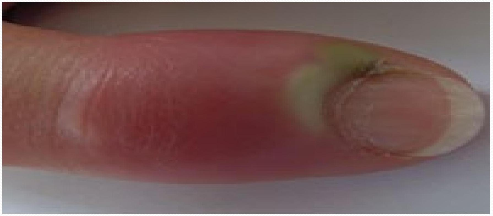
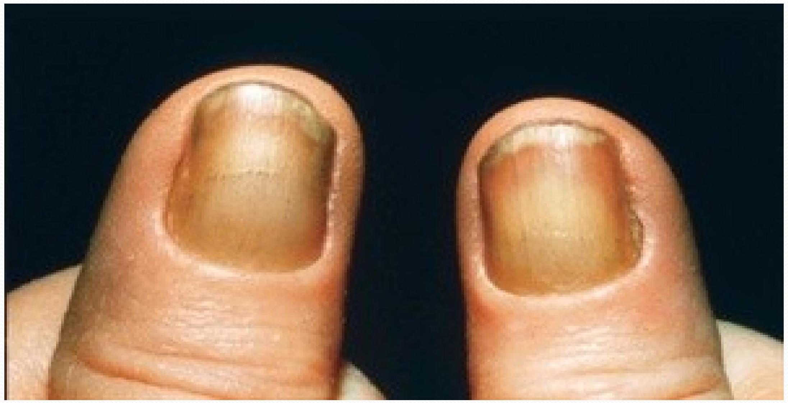
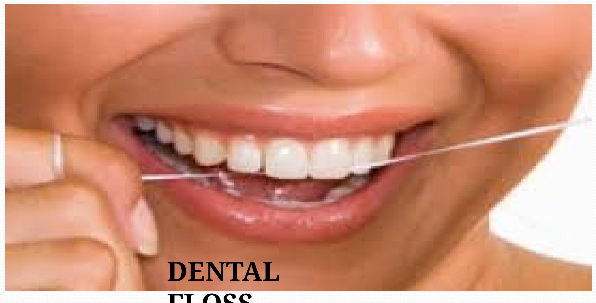

HYGIENE
SESSION OBJECTIVES
By the end of the session, students will be able to:
- Define personal hygiene
- Explain the importance of maintaining Personal Hygiene (P/H)
- Describe the factors involved in the maintenance of P/H
- Analyze conditions which occur due to poor hygiene
Defining Hygiene
Hygiene is the study of health and observance of health rules. It encompasses the study of methods and means of preserving health. Hygiene is classified into two main categories:
- Personal hygiene.
- Communal hygiene.
PERSONAL HYGIENE
It's a branch of hygiene which deals with health maintenance in the individual in order to safe guard his own health and the health of others. This is achieved by knowing and practicing the rules of hygiene and sanitation and adhering to the principles of good health and living.
PRINCIPLES OF GOOD HEALTH AND LIVING
- Preventive or prophylactic measures.
- Appropriate waste disposal.
- Maintenance of body cleanliness.
- Water treatment.
- Immunization.
- Aspect of diet or food safety.
Another key principle is PROMPT CARE WHEN INJURIES OR ILLNESS DEVELOP.
Personal health is the responsibility of each individual who should be able to keep himself physically fit so that one can make the greatest contribution to the community he/she is in.
IMPORTANCE OF MAINTAINING PERSONAL HYGIENE
Personal hygiene contributes to health in several ways:
- It protects the individual against disease germs that are present in the environment.
- It protects the family by reducing the spread of disease germs.
- It promotes health - This is a state of maximum, physical, mental (Psychological), social, spiritual well being and not merely the absence of disease or infirmity.
- It promotes morale - An individual will confidently face others.
MEASURES TO PROTECT AND IMPROVE HEALTH
- Personal cleanliness.
- Care of mouth and teeth.
- Care of gut.
- Food and drink.
- Rest and recreation.
- Protection against elements such as heat, cold, rain and wind.
- Protection against disease carrying insects.
- Avoidance of sources of the disease such as ensuring that water is treated.
- Proper disposal of waste to prevent environmental contamination.
- Special protective measures such as wearing protective clothing depending on the environment we are in.
PERSONAL CLEANLINESS
We should keep our body and clothing clean.
SKIN
The skin is an extensive and important organ containing many nerve endings, glands and blood vessels. A healthy skin should be firm, supple (shiny) and elastic. Cleanliness of the skin is very important for a lot of dirt collects on the skin surface.
This dirt is composed of:
- Dried sebum.
- Solids that are left by the evaporated sweat.
- Dust from environment.
- Micro-organisms.
- Epithelial scales.
If not washed out, the above will clog the pores of the secreting glands. In order to maintain the cleanliness of the skin, we need to have daily baths (warm or cold baths). We should clean our bodies with soap because soap removes dirt because of its alkaline nature which forms an emulsion with the oily sebum and the dirt is washed off with water.
ADVANTAGES OF WARM BATHS
The recommended temperature is 38°c or 100°F.
- Warm baths are refreshing and have a sedative action due to the soothing effect on the nerve endings.
- Regulation of temperature.
- Opening of the pores.
- Relieve of cough illness-eliminates phlegm-the cause of irritation.
- Accelerates blood circulation-avoiding migraine.
- Relieve of stress.
- Keep the skin moist and lubricated.
BENEFITS OF COLD BATH
- Improved blood circulation
- Increases testosterone
- Increases energy and well being
- Strengthens immunity
SOME EFFECTS OF UNCLEANLINESS
- Skin diseases e.g. acne, scabies, ring worms, pediculosis.
- Lice (Pediculosis).
- Bed bugs.
- Fleas.
- Bad smell-oral.
- Dental caries.
Care of Head, Hands, and Feet
CLEANLINESS OF THE HEAD/HAIR
- Proper care of the hair and daily brushing.
- Shampoo at frequent intervals for moisturizing and blood supply.
- Fresh air is also required for the hair.
HAND /NAILS
Hands should be kept clean every time, free from cracks and roughness. These occur due to exposure to cold wind, use of antiseptics and manual work. Nails should be cut short in a curve manner.
Nurses should not have pointed or painted nails as they can injure the patient and self, and microorganisms can be harbored by them. Infection can set in if poorly cut, a condition known as Paronychia.
It is advisable to apply glycerin or Vaseline to the palms and hands. Wash hands and nails frequently with soap and water.
THE FEET
Clean feet daily and dry them thoroughly especially between the toes. Sweat glands in the feet are many and many people have excessive sweating, a condition called hyperhidrosis. This is offensive to some and can also cause soreness. Socks should be cleaned every day and feet should be cleaned at least twice per day.
Change socks & stockings frequently and do not re-use them. Some people apply spirit and deodorants which encourage evaporation. Shoes should be dusted daily and aired, and also cleaned inside. Using nice inner soles which can be washed daily is recommended.
SOME PROBLEMS THAT OCCUR IF FEET ARE NOT CLEANED WELL
- Corns - from ill-fitting shoes.
- Callosities - caused by pressure and friction of the under surface.
- Bunions - due to wearing sharp pointed shoes.
HYPERTROPHIED NAILS (ONYCHAUXIS)
These are hard, thick nails mostly resulting from injuries.
PREVENTION OF FOOT PROBLEMS
- Wear comfortable shoes which are well fitting and don't clamp the toes.
- Leather shoes are the best because they are porous and allow air circulation.
- They are also easy to clean.
- The inner part should be firm and soft.
- Heels should be low to avoid throwing the weight of the body ahead.
THE NURSE'S SHOE
- Laced shoes are the best because they provide better support.
- A medium heel tipped with rubber is advocated to help in quick and quiet walking.
- Have at least 2 pairs to alternate in wearing.
CARE OF MOUTH AND TEETH
If the mouth is not cleaned, it can become infected and the tongue can develop sores and a bad smell.
Prevention
- Clean mouth in the morning and evening and if possible after each meal.
- Use an effective tooth brush or the traditional sticks or roots.
- Use up and down movements and also circular movements.
One can use dental floss because a tooth brush cannot remove all the food remains.
Accumulated food particles will cause decay and makes micro organisms attack the gum and teeth causing dental caries (teeth decay). This leads to insufficient chewing and thus ill health. Infected teeth can spread infections to other parts of the body. One can also use saline water for teeth care and gargling too.
Importance of Oral Hygiene
- Prevention of mouth diseases e.g. stomatitis, gingivitis, dental caries etc.
- Improves self image
- Promotes digestion
- Gives pleasure in eating-taste of food
- Good healthy teeth enhance speech
- Cutting of cost-dental care
OTHER FACTORS THAT AFFECT OUR HEALTH
- Exercises: Physical exercises are essential for health to be maintained.
- Recreation
- Rest and sleep
- Posture
- Habit formation: Includes good and bad habits.